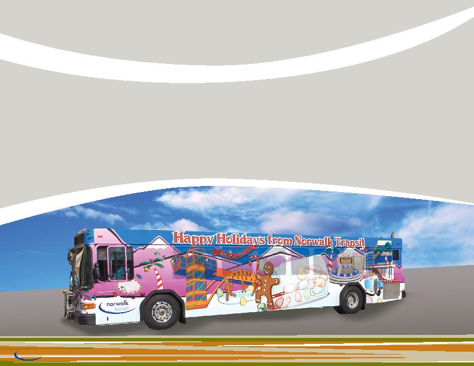

Community
Involvement
CoMMuniTY involveMenT
Stuff-A-Bus Toy Drive and Canned-Food Drive
norwalk transit has taken an active role in assisting local disadvantaged children and their families within our community during the holidays.
our goal in creating the holiday Bus is to create a mobile billboard that advertises the joy of giving during the holidays.
For approximately one month each year, one of our buses is fully wrapped in holiday-themed graphics and placed on our various routes.
the stuff-A-Bus program is a toy drive aimed at collecting enough toys and articles of clothing to "stuff" an entire transit bus. the items
collected are donated to local community organizations for distribution to needy children during the holidays. the program has been well
received by our community and the struggling families among us during the holiday season.
in addition, for two days during the holiday season, nts offers free rides to passengers who donate one can of food
on-board the bus. All collected items are donated to the city of norwalk senior services center for its food bank.
10